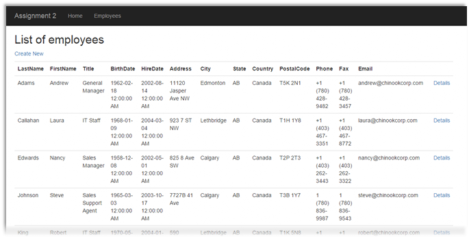
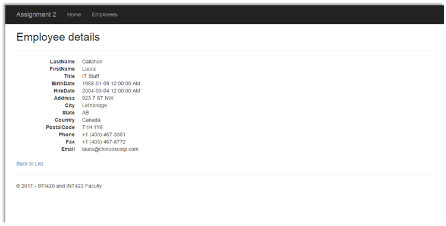
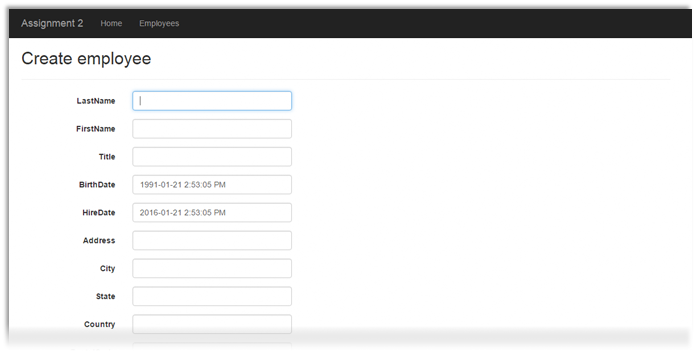

INT422 Assignment 2
Common interaction patterns in a web app that uses a persistent store.
Read/skim all of this document before you begin work.
Due date
Section A: Tuesday, February 6, 2018, 11:59pm
Grade value: 5% of your final course grade
If you wish to submit the lab before the due date and time, you can do that.
Objective(s)
Implement some of the common interaction patterns in a web app that uses a persistent store.
Introduction to the problem to be solved
We need a simple ASP.NET web app that round-trips data to-and-from the browser user. We will use a Visual Studio project template that includes a database, and work with “Employee” data.
Specifications overview and work plan
Here’s a brief list of specifications that you must implement:
Here is a brief work plan sequence:
Every week, in the computer-lab class/session, your teacher will record a grade when you complete a specific small portion of the assignment. We call this “in-class grading“.
The in-class grading will be announced in-class by your professor, may look like:
During the class/session, your professor will help you get started and make progress on this assignment.
Getting started
Create a new web app, named Assignment2. It MUST use the “Web app project template v1” project template from the course web site.
Using the technique that you learned in Assignment 1, update the project’s code.
Build/compile, and run the app, to ensure that you are starting with a working error-free base. Then, as you write code, build/compile frequently.
❝Note: If your project has a compilation error, contact your professor, and include the error message details. There may be a simple fix.
However, please note that your professor cannot provide you with technical support on your own personal computer. If a simple fix is not available, you will simply have to complete the assignment on a College computer, which is correctly-configured.
Customize the app’s appearance
You will customize the appearance all of your web apps and assignments. Never submit an assignment that has the generic auto-generated text content. Make the time to customize the web app’s appearance.
For this assignment, you can defer this customization work until later. Come back to it at any time, and complete it before you submit your work.
Follow the guidance from Assignment 1 to customize the app’s appearance, including the page heading of each page.
Create view models and mappers that cover the use cases
In the Models folder, study the Employee class. Although it will include some unfamiliar syntax, you should be able to locate and understand its properties. For a visual image, open the DesignModelClasses.cd object.
In the Controllers folder, create a source code file to hold the employee-related view model classes. As you recently learned, the source code file name is a composite name, consisting of the singular word form of the entity (i.e. Employee), plus “_vm”. Therefore, “Employee_vm.cs”.
Next, follow this best practice technique to create view model classes.
EmployeeAdd
We want to take advantage of inheritance. Therefore, the first class that we should write is the “add” class, EmployeeAdd.
The EmployeeAdd class will be used to define the data that the browser user sends (using HTTP POST) from the HTML Form. Then, the controller logic will accept the data, and process it, resulting (presumably) in the creation of a new employee object in the data store. In summary, it’s used to get data from the user to the web app.
Copy the properties (with their data annotation attribute statements) from the Employee design model class (Models/Employee.cs), except for the following:
Paste them into the EmployeeAdd view model class. Fix the resulting error. As you have learned, create a constructor, to set appropriate initial values of the properties that need initialization.
Hint or tip:
· Did you know that the DateTime structure includes convenient methods to modify a date?
· Assume that we want to set the employee’s birth date to the current date, less twenty-five years. That would be a good reasonable initial value for a property like that.
· You have learned that DateTime.Now will return an object that has the current date and time.
· Use the AddYears() method to change that value. Passing in “-25” would do the job. Try it!
Mapper for EmployeeAdd
Open the Manager class. Think about the purpose of the EmployeeAdd class.
Add a mapping that implements the purpose.
EmployeeBase
Next, create a view model class to hold the base or basic properties of an employee. In almost all cases, this kind of class includes all the properties from the “add” class, plus the object’s identifier.
The EmployeeBase class will be used to define the data that the web app user passes to the view, and then displayed in a web browser. In summary, it’s used to get data from the web app to the user.
Use inheritance to include all the properties from the “add” class. As you have read and learned, the colon character ( : ) is used to designate C# inheritance. So, the signature of the EmployeeBase class would be:
|
public class EmployeeBase : EmployeeAdd |
Next, add the identifier property. You can copy it from the design model class, if you wish.
What is the name of the identifier property – is it “Id”?
· If yes, you’re done here.
· If not, then you MUST add the “Key” data annotation attribute statement before the identifier property.
Mapper for EmployeeBase
Think about the purpose of the EmployeeBase class.
Then, add a mapping that implements the purpose.
Add methods to the Manager class that handle the use cases
As noted above, the app will implement these use cases for the employee entity:
Follow the recommended guidance in the Manager.cs comments to create method stubs for each use case. Then, use the guidance below to code the methods.
1. Get all
Features:
Algorithm:
Questions:
What type of collection is used here? (What’s the rule? Review the “collections” topic if you need a reminder.)
2. Get one
Features:
Algorithm:
3. Add new
Features:
Algorithm:
Questions:
Why do we return a fully-configured new object?
Add a controller, with code to work with the manager object
In this assignment, we will work with the employee entity. Therefore, create a controller.
Recently, you learned how to add a reference to the manager. Do that now.
For the employee entity,
implement the “get all” use case;
including controller code, and view
Best practice:
Add a new view, using the list template, and the base view model class.
As suggested in the past, improve the appearance of the view.
At this point in time, you can test your work. Run your app, using the /employees/index URL segment.

Implement the “get one” use case;
including controller code, and view
Best practice:
Add a new view, using the details template, and the base view model class.
As suggested in the past, improve the appearance of the view.
Test your work. The “Details” links on the list-of-employees page will now work.

Implement the “add new” use case;
including controller code, and view
The “add new” use case uses two controller methods, as explained in the recent notes:
Create method with an empty parameter list…
As you have learned, the Create() method with an empty parameter list will:
Therefore, for every view that includes an HTML Form, you must decide whether the form needs initial data and settings to display properly. In most cases, the answer is “yes”. This is a best practice.
For this use case, simply create a new object, based on the add view model class. Pass it to the view.
Add a new view, using the create template, and the EmployeeAdd view model class.
As suggested in the past, improve the appearance of the view.
Best practice: Focus the cursor at the first text input field. How?
In the Create view, locate this statement:
|
@Html.EditorFor(model => model.LastName... |
Add another attribute: Existing text:
|
...htmlAttributes = new { @class = "form-control" }... |
New text:
|
...htmlAttributes = new { @class = "form-control", @autofocus = "autofocus" }... |
Test your work. The “Details” links on the list-of-employees page will now work.

The other Create method…
As you have learned, the other Create() method will:
There are several best practices that we use in this method.
Parameter type: The “add” view model class is typically used as the parameter type. Do NOT use FormCollection, We WANT to use ASP.NET MVC model binding.
In the method body, the first task is to validate the incoming data. If not valid, then return the view, along with the bad data that was passed in. (The view code will then automatically display the error to the browser user.)
Next, attempt to create a new object, by calling the method in the manager object. It will return a new and fully-configured object, if successful. (Otherwise, null.)
Finally, if successful, redirect to the details view, and ensure that you pass the object identifier.
Otherwise, return the view, along with the bad data that was passed in.
Test your work. Submitting the HTML Form will now work.
Testing your work
In a browser, test your work, by doing tasks that fulfill the use cases in the specifications.
Reminder about academic honesty
You must comply with the College’s academic honesty policy. Although you may interact and collaborate with others, you must submit your own work.
Important note
You MUST use the provided “Web app project template v1” project template and AutoMapper instance API for your assignment. Failure to do so will result in a huge penalty for the assignment.
Submitting your work
Here’s how to submit your work, before the due date and time:
1. Locate the folder that holds your solution files. In Solution Explorer, right-click the “Solution” item, and choose “Open Folder in File Explorer”. It has three (or more) items: a Visual Studio Solution file, a folder that has your project’s source code, and a “packages” folder. Go UP one level.
2. Make a copy of the folder. This is the version that you will be uploading.
3. Remove the “packages” folder from the copied folder; also, remove the “bin” and “obj” folders.
4. Compress/zip the copied folder. The zip file SHOULD be about 2MB or less in size. If it isn’t, you haven’t followed the instructions properly.
5. Login to My.Seneca/Blackboard. Open the Web Programming on Windows course area. Click the “Assignments” link on the left-side navigator. Follow the link for this lab. Submit/upload your zip file. The page will accept three submissions, so if you upload, then decide to fix something and upload again, you can do so.